2.3 CAD: functions, surfaces, and meshes
A. Representation
Our cabinet’s round handle can be described by a radius, a length, and a mathematical rule for its surface. We can then generate a mesh from that description, choosing how closely its small faces follow the curve.
CAD descriptions · Four uses · Comparison · Generating CAD · Understanding and assembly
2.3.1 Start with the same handle
CAD means computer-aided design. CAD software supports several ways to build models; here we focus on describing solid parts with mathematical curves and surfaces. A design can also keep editable dimensions and the steps used to build it.
How can a CAD model describe a part?
Three useful descriptions are boundary representation (B-rep), constructive solid geometry (CSG), and a parametric construction history. They record different aspects of a design and can work together.
B-rep stores the boundary of the solid. For the grip, this means a curved cylindrical side, two flat end faces, and the edges joining them. Mathematical surfaces describe the shape of those faces.
CSG describes operations on solids. We can combine a cylindrical grip and two cylindrical supports using a union. Other operations remove one volume from another or keep their shared volume.
A parametric history stores the construction steps and their inputs. For example: draw a circle with radius r, extrude it to length L, and add the supports at chosen positions. A sketch is a 2D drawing; extrusion extends it into a solid.
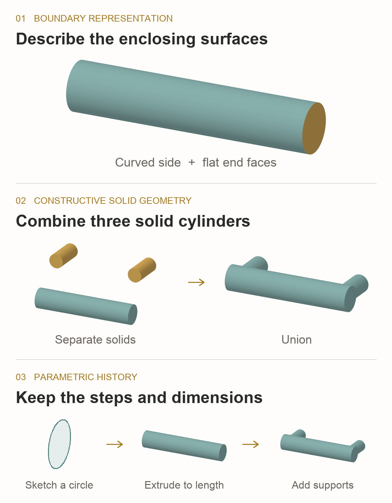
The CAD software supplies mathematical building blocks such as cylinders and planes. When we choose a circle and an extrusion distance, it constructs the corresponding surfaces. We usually work with shapes and dimensions in the interface; the software maintains their equations. See CadQuery’s introduction to boundaries and construction operations.
In this example, we build the handle by choosing its shape and dimensions. The CAD software uses these choices to construct the mathematical surfaces. We can supply them through drawing tools, dimension fields, or a script.
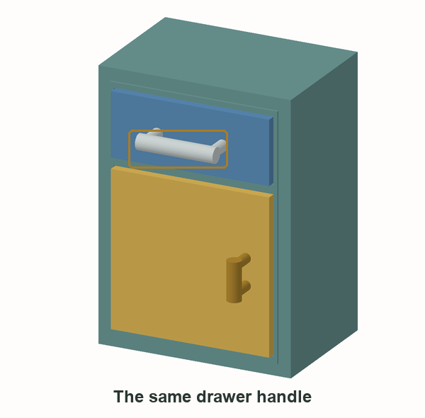
Look at the round grip
The handle has a horizontal grip and two supports. We will first describe the grip’s curved side, then add its ends and connect it to the supports.
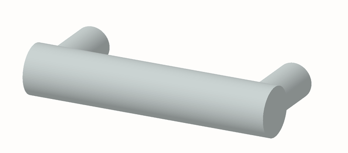
For this teaching model, we choose a cylindrical grip with radius 50 mm and length 500 mm. These choices are the inputs used to build its geometry.
2.3.2 A function returns a surface point
A function is a rule that turns inputs into an answer. To locate a point on this grip, choose two inputs: an angle around it and a distance along it. The function returns that point’s 3D coordinates.
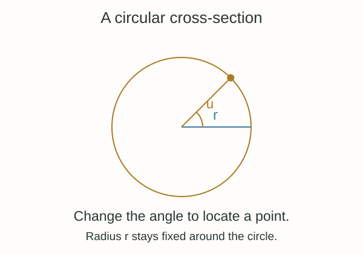
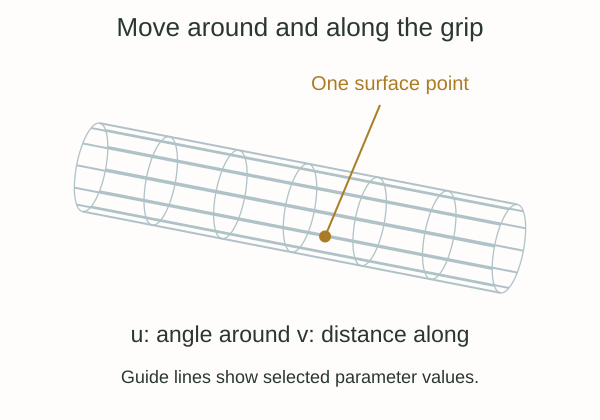
For a simple formula, give the grip its own local coordinates: the x-axis runs along its length, starting at the center of one end. The y- and z-axes span the circular cross-section.
- u goes around the circle, from 0 to 2π radians: one full turn.
- v runs from 0 to the grip length L.
- r is the radius. The cosine and sine terms give the point’s two coordinates around the circle.
For example, with r = 50 mm, choosing u = 0 and v = 300 mm gives (300, 50, 0) mm. Choosing u = π/2 at the same distance gives (300, 0, 50) mm: a quarter-turn around the same cross-section.
Changing u and v explores the same surface; changing r or L changes its shape. The part’s placement then locates this local shape on the cabinet. CAD systems also use spline surfaces, including NURBS, to describe more complex curves. See Open CASCADE’s curves and surfaces.
2.3.3 From a surface to a solid part
The formula describes the grip’s curved side. Restricting v to 0–L gives it a finite length. Add a circular face at each end, and the side and end faces enclose a solid grip.
A common CAD description is boundary representation (B-rep). It stores the surfaces, the edges that bound their faces, and how those faces connect. For the grip, the two end circles connect the cylindrical side to the two flat end faces. Each support can be described as another solid part. CadQuery’s B-rep introduction explains these building blocks.
This gives us two useful layers: geometry describes the surfaces; connections describe how they form a part. A CAD design may additionally store a recipe such as “draw a circle, extrude it to length L, then add the supports.”
2.3.4 Generate a mesh from the surface
To make a triangle mesh, sample points on the surfaces and connect nearby samples into faces. This conversion is called tessellation. On the grip’s curved side, the triangles span between sampled points and approximate the cylinder.
One design, different mesh resolutions
- 01Choose the shape and dimensionsWe choose a cylindrical grip with radius 50 mm and length 500 mm.
- 02CAD constructs the surfacesThe software uses these inputs to build the cylindrical side, end faces, and their connections.
- 03Generate a meshWe choose a tolerance. The software samples the surfaces and connects the points into triangles.
- 04Use the meshRender a view or prepare simulation geometry.
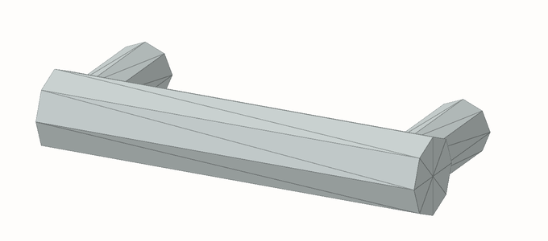
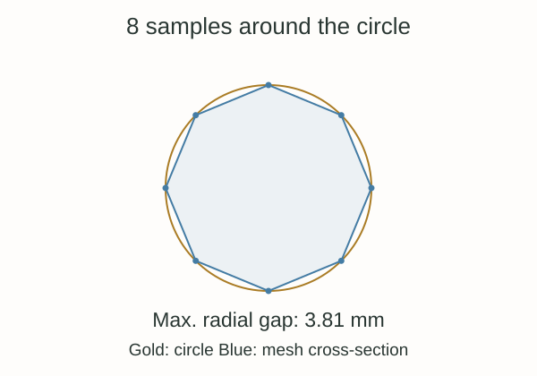
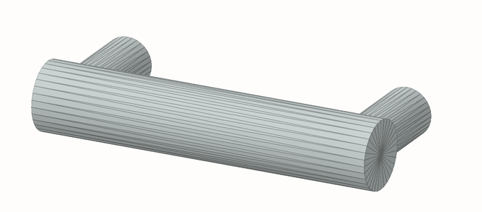
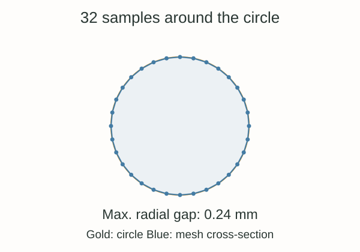
Both meshes come from the same radius and length. In the cross-section, the greatest gap lies halfway along each polygon edge. For this 50 mm radius, it is about 3.81 mm with 8 sides and 0.24 mm with 32 sides.
A CAD exporter can use a tolerance to control this approximation. The tolerance specifies the allowed geometric deviation. A tighter tolerance generally produces more faces on curved regions. The source surface remains available for another export at a different resolution. CadQuery’s export guide describes mesh tolerances and output formats.
These figures are generated by script from the shared cabinet and the cylinder function. Even the smooth teaching view uses samples to draw its pixels; the continuous surface is the mathematical description behind that view.
2.3.5 Change the design, then rebuild
Parametric CAD lets us edit design parameters and rebuild the geometry from them. For our grip, the design keeps the radius, length, and the operation that constructs the cylinder. To make it thinner, we change the saved radius from 50 mm to 35 mm. The software rebuilds the grip using that value, while keeping its length and axis fixed.
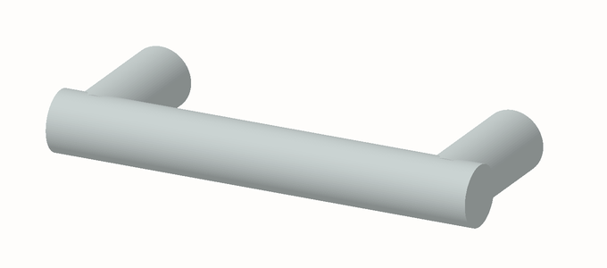
The surface function changes with the radius. In the formula from Section 2.3.2, replacing r = 50 mm with r = 35 mm changes the coordinates returned for each pair of inputs u and v. The general cylinder formula stays the same, and the new parameter value defines a thinner cylindrical surface. Changing the grip to a different kind of shape would also require changing its construction and surface description.
When we export this updated part as a mesh, the software samples the new surfaces and creates new triangles. The workflow is edit the radius → rebuild the CAD geometry → generate an updated mesh.
The benefit comes from retaining the design information. We can select a meaningful dimension such as “grip radius” and let the saved construction rebuild the shape. We can also define relationships that keep the handle centered on the drawer or place both supports the same distance from its ends. When a relevant dimension changes, the software updates the geometry according to those rules. CadQuery’s assembly example shows dimensions, reusable parts, and constraints working together.
Design parameters set the intended shape. Meshing settings set how closely a mesh follows that shape. Increasing the mesh resolution approximates the existing surface more closely; changing the radius defines a new surface.
A mesh workflow can also support parameter changes when it retains a generator or procedural rules. In both cases, keeping the editable recipe makes it possible to rebuild the result after a design change.
2.3.6 Four uses of the same CAD handle
CAD is especially useful when a task depends on dimensions, design relationships, or surface geometry. Each example below uses the same handle. Its dimensions are chosen for this teaching model.
Design a replacement handle
Suppose the replacement must attach at the same two mounting positions. We keep the support centers 420 mm apart, and specify the grip’s length and radius.
These dimensions give the manufacturer a defined target shape. Material, manufacturing tolerances, and fastening details complete the production design.
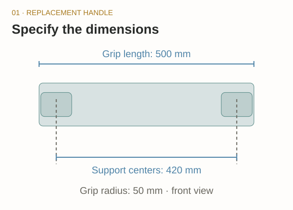
Check a fit or clearance
Look through the middle of the grip, between its supports. In this design, the grip axis is 160 mm in front of the drawer. Its radius is 50 mm, leaving 110 mm of open space behind it.
We can compare that gap with a robot finger’s dimensions, then check its full approach path against the handle, supports, and drawer. CAD supplies surfaces and distances for these geometric checks.
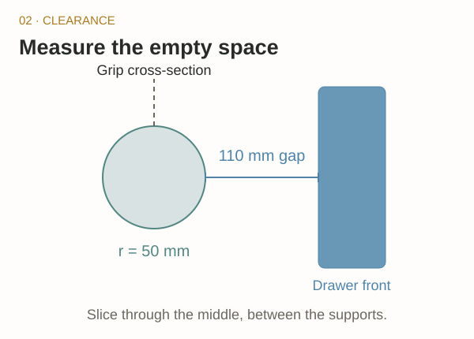
Analyze the surface
Choose a point on the curved grip. A normal points outward, perpendicular to the surface. A tangent follows the surface locally. These directions help describe how a tool or finger would approach a contact point.
Curvature describes bending. Around a circular cross-section it equals 1/r, so a thinner grip bends more sharply. Along the cylinder’s straight axis the curvature is zero. The surface function lets software calculate these properties at a chosen point. See Open CASCADE’s surface geometry documentation.
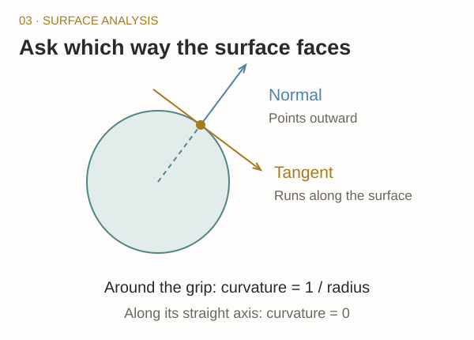
Create controlled experiment variants
To study grip thickness, rebuild the design with radii of 35, 50, and 65 mm. Keep its length, axis, and support dimensions fixed. The same recipe produces all three variants.
Export each part for the simulation setup, then run the same robot task with each handle. Compare outcomes such as successful grasps or unintended contacts. The changed radius also changes the gap behind the grip, which should be recorded as part of the experiment.
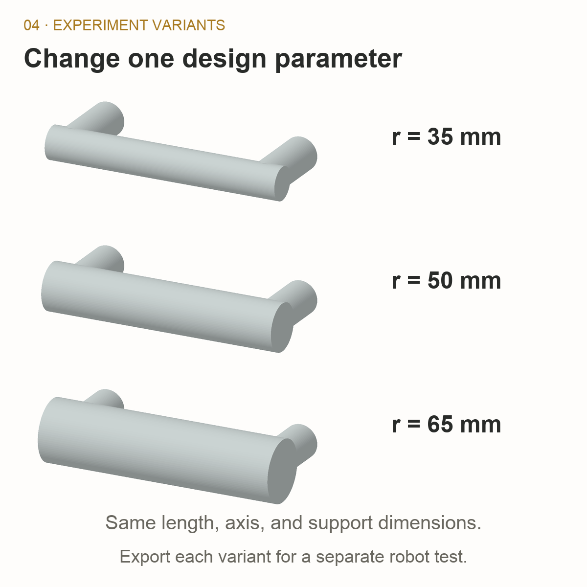
2.3.7 CAD, meshes, points, and Gaussians
Each description keeps useful information about the same handle. The task determines which information we want to work with.
CAD keeps defined surfaces and, when retained, a construction recipe. The grip’s radius and axis are available directly. A parametric design also keeps dimensions and relationships that we can edit and rebuild. This is convenient for fitting a replacement part, specifying a design, and making controlled variants.
A mesh keeps vertices and connected faces. It is convenient for surface editing, rendering, and preparing simulation geometry. Accurate meshes also support measurement. If we need a cylinder radius from a plain mesh, we can fit a cylinder to its surface samples. A procedural mesh workflow can keep editable parameters in its generator, too.
A point cloud keeps sampled positions. It provides evidence about an observed object, such as points measured on a real handle. Fitting surfaces or a CAD construction to those samples can turn that evidence into an editable design.
Gaussian splatting keeps spatial Gaussian elements and appearance parameters. It is useful for rendering the observed handle from different viewpoints. Tasks that need explicit surface dimensions can use a recovered surface or CAD model alongside this appearance representation.
A practical workflow can use several forms: measure a handle as points → recover a CAD design → edit its dimensions → export a mesh. Keeping the editable source preserves the construction. STEP commonly exchanges CAD geometry, while mesh formats serve downstream tools. CadQuery’s format guide explains what its exports retain.
2.3.8 Research: learning to create CAD descriptions
In our worked example, we supplied the shape and dimensions. Research systems learn to propose a CAD construction from text, sampled points, or an image. The predicted instructions are then executed by CAD software to build geometry.
The examples below use our handle to explain each workflow. The diagrams are scripted teaching illustrations. The linked projects show the researchers’ actual predictions. Predicted dimensions and hidden surfaces need checking against measurements when the goal is a replacement for a real part.
Text2CAD: describe a part in words
Input: a text description, ranging from a general shape to detailed construction instructions.
Steps: a trained model predicts a sequence of sketches and extrusions. CAD software executes those steps.
Output: a proposed CAD model with a construction sequence. For our teaching example, a request could describe a round grip with two supports. The useful idea is that language can specify a design to build.
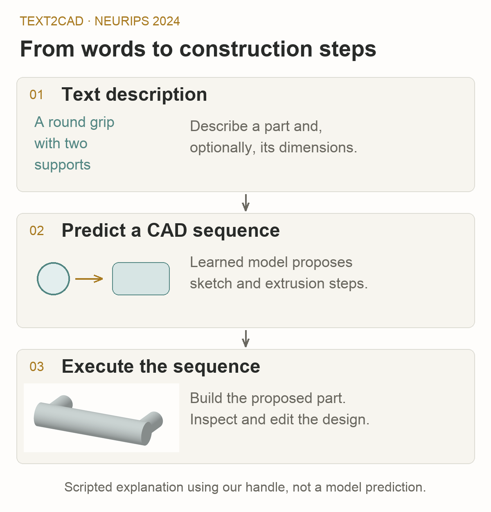
CAD-Recode: turn sampled geometry into code
Input: a point cloud representing a part’s shape.
Steps: a trained model predicts Python code using the CadQuery library. Running that code constructs the CAD geometry.
Output: a CAD program and the solid it builds. Imagine supplying points sampled from our handle: the aim is to recover a construction that explains its shape. The saved code provides a way to inspect and change the construction.
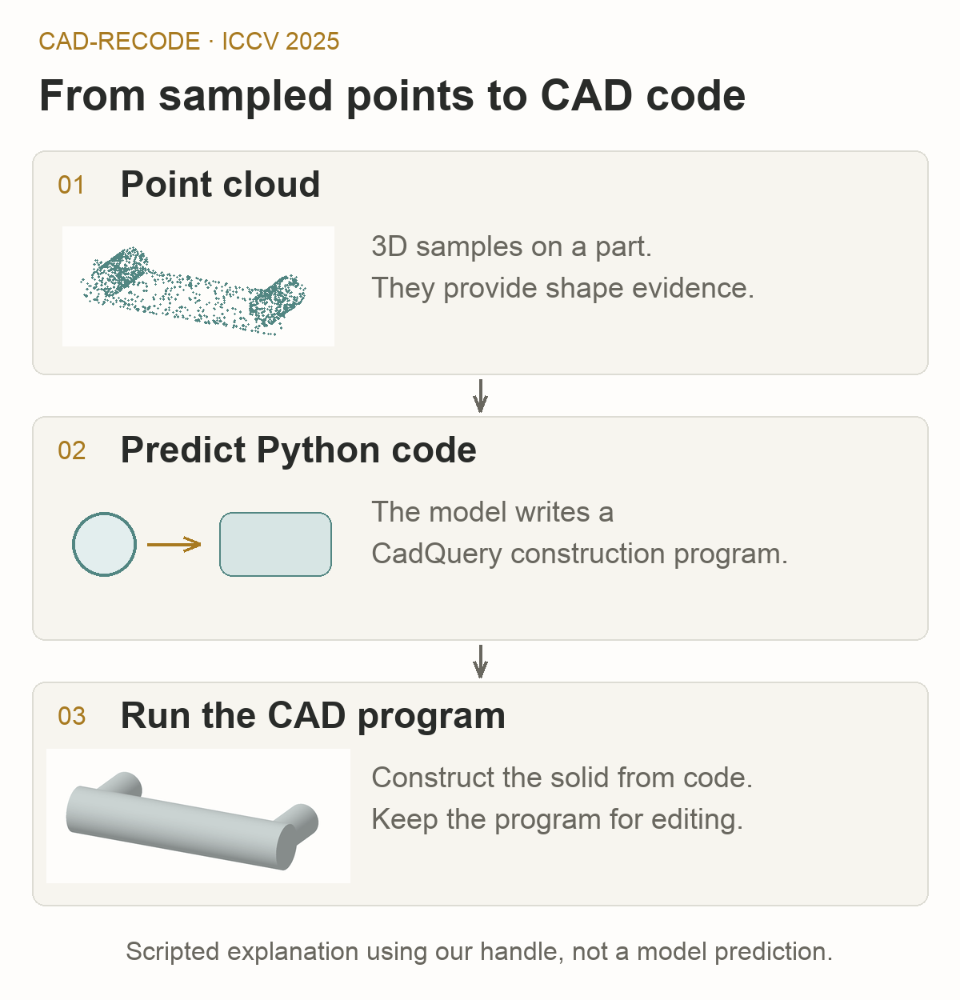
Img2CAD: infer the structure, then its dimensions
Input: an image of an object.
Steps: a vision-language model proposes named parts and CAD command types. A second model, TrAssembler, predicts numerical attributes such as coordinates and extrusion distances. CAD software executes the completed program.
Output: an editable CAD construction. With our handle as an illustration, one decision is which pieces and operations to use; another is how large those pieces are and where they belong.
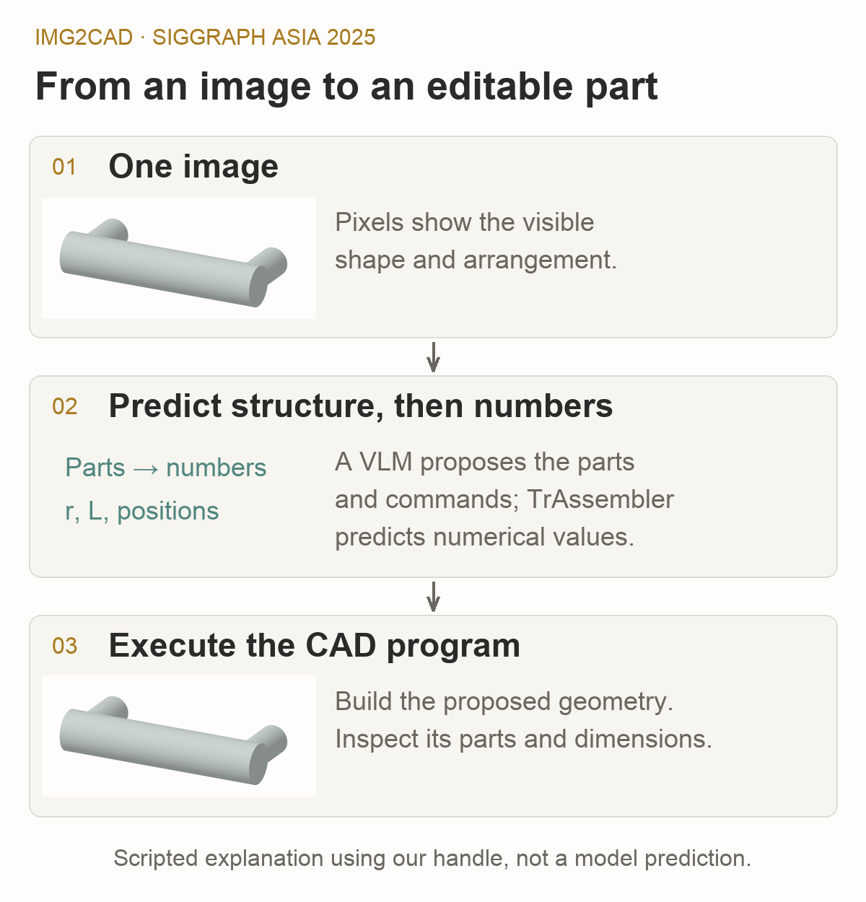
ConCAD: learn geometric relationships as well as shape
Input: a rendered image of a part.
Steps: the model generates a CadQuery program. During training, it receives feedback about patterns in the code and the 3D shape obtained by executing it, using reference programs and solids.
Output: an executable CAD program. This work investigates preserving geometric relationships as well as overall shape. For our handle, an analogous design intention is to place the two supports symmetrically about the grip’s center.
ConCAD, September 2026 preprint. Its training and evaluation study how well generated designs recover such relationships.
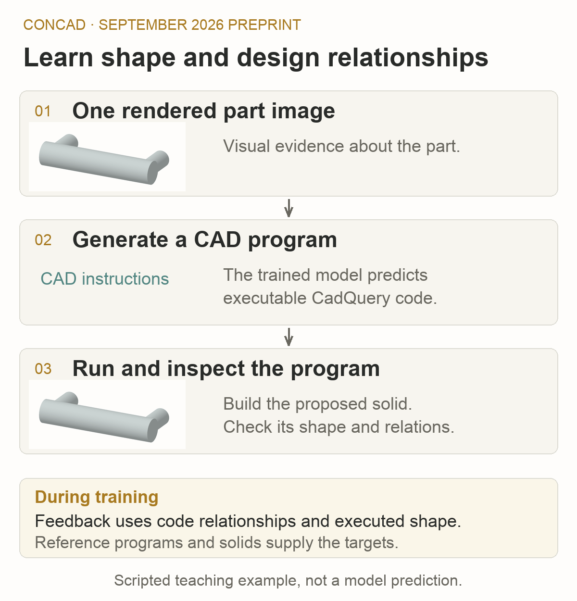
For these methods, the learned model proposes the construction; the CAD system evaluates the resulting geometry. For robot use, we can then organize the parts and joints as in Chapter 3, and supply collision geometry and physical settings as in Chapter 4.
2.3.9 Research: using CAD to understand and assemble parts
Once a CAD model exists, its surfaces and connections can become inputs to a learning system. UV-Net learns to understand a part’s shape. AutoMate helps a user assemble separate parts. Both use the geometry and structure stored in a B-rep.
The following diagrams use our cabinet and its handle as scripted teaching examples. The linked papers show the methods’ evaluated results.
UV-Net: recognize a CAD part and label its faces
Input: an existing CAD model. Imagine giving the system our cabinet’s complete handle, including its round grip and two supports. The CAD file already describes the surfaces and how they connect.
Output: information identifying the part or its faces. A label is a category name attached to the model. There are two possible tasks:
- Recognize the whole part. A model trained to distinguish handles from other kinds of parts could assign the category “handle” to this entire CAD model. This task is called shape classification.
- Label the faces. A model trained to distinguish regions of a handle could assign “grip surface” to faces on the horizontal grip and “support surface” to faces on the two supports. Each CAD face receives a category. This task is called face segmentation.
These handle labels are teaching examples. A model would need training data with those categories to predict them. The authors evaluate tasks including recognizing CAD solids shaped like letters and labeling faces by modeling or machining features. See the UV-Net paper, CVPR 2021 and implementation.
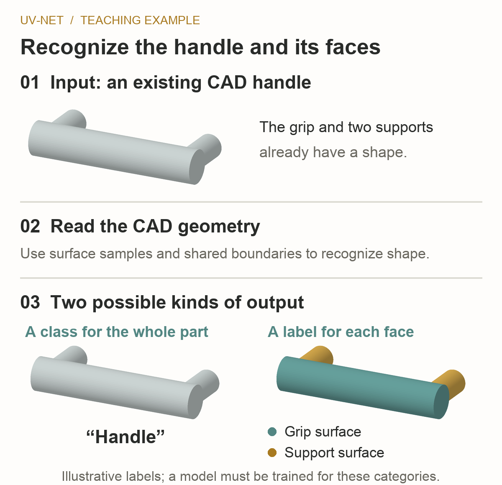
How CAD helps: UV-Net samples positions on surfaces and boundary curves. The surface function supplies those positions. It also reads which faces share boundary edges, combining information about each face’s shape with information from its neighbors. Together these help the model recognize the part or label its faces.
A whole-part label can help organize a CAD collection. Face labels can highlight regions for inspection or further processing. In both cases, the result adds information to an existing design.
AutoMate: suggest how separate parts attach
What comes out? AutoMate suggests assembly relationships for the user to choose. In the demonstrated CAD tool, the user selects parts and nearby faces, reviews ranked suggestions, and accepts a connection. The CAD system then uses the selected constraint to position the parts.
Input: existing CAD parts. In its interactive workflow, the user chooses two parts and points to nearby faces where they should connect. For our example, choose the handle and the blue drawer front, then indicate their mounting regions.
How it uses CAD: AutoMate reads geometric information, such as surface types and parameters, together with the connections between faces, their boundary loops, edges, and vertices. A boundary loop is a connected chain of edges around a face. A graph network learns features from this structure.
CAD geometry also supplies possible attachment references: a point and a set of directions on each part. For example, a circular face has a center and a perpendicular direction. AutoMate ranks candidate pairs of these references and predicts an assembly constraint type. Such a constraint is called a mate: it describes how the two parts are positioned and what relative movement is allowed. The user chooses among the suggestions. See the AutoMate project, SIGGRAPH Asia 2021 and paper.
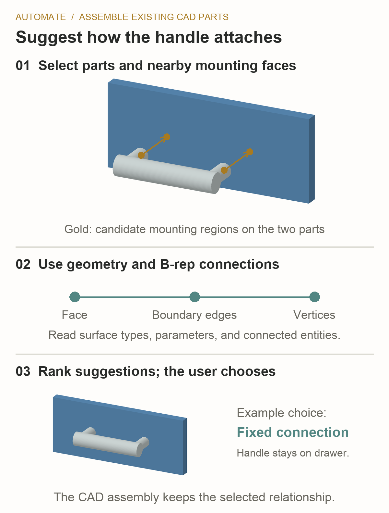
Output and use: a suggested attachment location, orientation, and mate type that the user can accept in the CAD assembly. In our example, a fixed mate keeps the handle attached to the drawer. When the drawer slides, the handle travels with it. The drawer’s sliding connection to the cabinet body is a separate relationship, introduced in Chapter 3: parts, joints, and motion.
The two kinds of connection serve different purposes. B-rep connections describe how faces and edges form each solid part. Assembly mates describe how separate parts fit and move relative to one another. UV-Net uses the first to learn shape features; AutoMate uses part geometry and structure to help propose the second.